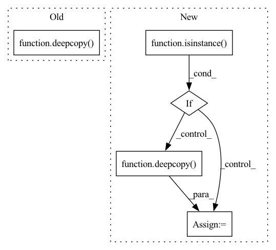

Pattern ID :26275
Before Change
if overapprox:
for i in np.arange(0 + self.dynamics.dt + 1e-10, t_max, self.dynamics.dt):
next_output_constraint = over_approximate_constraint(deepcopy(input_constraint))
next_input_constraint = deepcopy( next_output_constraint)
input_constraint, this_info = self.get_one_step_backprojection_set(
next_output_constraint, next_input_constraint, num_partitions=num_partitions, overapprox=overapprox
)
input_constraints.append(deepcopy(input_constraint))After Change
def get_backprojection_set(self, output_constraints, input_constraint, t_max, num_partitions=None, overapprox=False):
input_constraint_list = []
tightened_infos_list = []
if not isinstance( output_constraints, list) :
output_constraint_list = [deepcopy(output_constraints)]
else:
output_constraint_list = deepcopy( output_constraints)
for output_constraint in output_constraint_list:
input_constraints, tightened_infos = self.get_single_target_backprojection_set(output_constraint, input_constraint, t_max=t_max, num_partitions=num_partitions, overapprox=overapprox)
In pattern: SUPERPATTERN
Frequency: 3
Non-data size: 5
Instances Fragment ID: 79039078
Project Name: mit-acl/nn_robustness_analysis
Commit Name: 042a46d2012f8c1862cfedb24d600fbbad1ac007
Time: 2022-03-09
Author: nrober1122@gmail.com
File Name: nn_closed_loop/nn_closed_loop/propagators/ClosedLoopPropagator.py
M Class Name: ClosedLoopPropagator
N Class Name: ClosedLoopPropagator
M Method Name: get_backprojection_set(6)
N Method Name: get_backprojection_set(6)
M Parent Class: propagators.Propagator
N Parent Class: propagators.Propagator
M File Name: nn_closed_loop/nn_closed_loop/propagators/ClosedLoopPropagator.py
N File Name: nn_closed_loop/nn_closed_loop/propagators/ClosedLoopPropagator.py
M Start Line: 38
M End Line: 68
N Start Line: 39
N End Line: 52
Before Change
// copy entire gym env object
assert isinstance(self.env, gym.Env)
self.env = deepcopy( env.env)
class GymMazeEnv(MazeEnv):
Wraps a Gym env into a Maze environment.After Change
// clone state of classic control environments
control_envs = (CartPoleEnv, MountainCarEnv, Continuous_MountainCarEnv, PendulumEnv, AcrobotEnv)
if isinstance( target_env, control_envs) :
assert isinstance(source_env, control_envs)
target_env.state = deepcopy( source_env.state)
// clone state of atari environments
elif isinstance(target_env, AtariEnv):
assert isinstance(source_env, AtariEnv)
state = source_env.ale.cloneState() Fragment ID: 79039076
Project Name: enlite-ai/maze
Commit Name: 767f493c0919617e87a704f9b18d57645c4b7e73
Time: 2021-06-14
Author: office@enlite.ai
File Name: maze/core/wrappers/maze_gym_env_wrapper.py
M Class Name: GymCoreEnv
N Class Name: GymCoreEnv
M Method Name: clone_from(2)
N Method Name: clone_from(2)
M Parent Class: CoreEnv
N Parent Class: CoreEnv
M File Name: maze/core/wrappers/maze_gym_env_wrapper.py
N File Name: maze/core/wrappers/maze_gym_env_wrapper.py
M Start Line: 237
M End Line: 237
N Start Line: 238
N End Line: 262
Before Change
timesteps_since_eval %= eval_freq
// Sync eval env and train env when using VecNormalize
if isinstance(self.env, VecNormalize):
eval_env.obs_rms = deepcopy( self.env.obs_rms)
mean_reward, _ = evaluate_policy(self, eval_env, n_eval_episodes)
if self.tb_writer is not None:
self.tb_writer.add_scalar("Eval/reward", mean_reward, self.num_timesteps)
After Change
// Sync eval env and train env when using VecNormalize
env_tmp, eval_env_tmp = self.env, eval_env
while isinstance(env_tmp, VecEnvWrapper):
if isinstance( env_tmp, VecNormalize) :
eval_env_tmp.obs_rms = deepcopy( env_tmp.obs_rms)
env_tmp = env_tmp.venv
eval_env_tmp.venv
mean_reward, _ = evaluate_policy(self, eval_env, n_eval_episodes)
if self.tb_writer is not None: Fragment ID: 79039091
Project Name: dlr-rm/stable-baselines3
Commit Name: c6f90b9c3c62f3f4e6869f49982d0989f15e6aa4
Time: 2019-11-07
Author: antonin.raffin@dlr.de
File Name: torchy_baselines/ppo/ppo.py
M Class Name: PPO
N Class Name: PPO
M Method Name: learn(9)
N Method Name: learn(9)
M Parent Class: BaseRLModel
N Parent Class: BaseRLModel
M File Name: torchy_baselines/ppo/ppo.py
N File Name: torchy_baselines/ppo/ppo.py
M Start Line: 298
M End Line: 300
N Start Line: 299
N End Line: 305